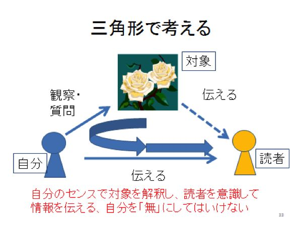
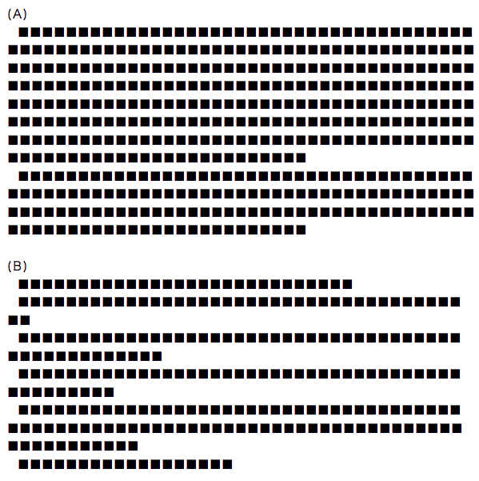

| 共感文章術シリーズ1 読まない人に読ませる共感文章術 ネット時代の文章術・基礎編 | |
| 坪田 知己 | |
| Symphocity Digital Publishing (2013) | |
Credits:
「スラスラといい文章を書きたい」――この電子書籍を購入された方は、そういう希望をもっておられると思います。
この本だけでは、その希望を叶えることはできないと思います（文中でも述べますが、個別に添削を受けないと個々の文章をよくすることはできません）が、コツの部分は全面公開します。
これまで、多くの文章論、「文章の書き方」の本が書かれてきて、それをすでに読まれて挫折した方も多いと思います。この本で紹介する文章術は、既存の文章術とは一線を画しています。ほとんどの文章法の本は、テクニック中心です。しかし、文章は「形が整えば合格」ではありません。「中身」がない文章は、いくら形が整っていても、読むに値するものになりません。
あなたに「心」がなければ、どんなにテクニックを身に着けても、心に響く文章は書けないのです。その「心」の表出の方法の一つが文章術なのです。
私が、2011年秋に本格的に文章術を教えるようになって、指導する中で、受講生の皆さんが、「あの言葉に納得した」と言われたのは、
「あなたは夏目漱石になれない。しかし、夏目漱石もあなたにはなれない」
という言葉です。
「1000人いれば、1000通りの名文がある」というのが、私の信念です。
世の中には、達人・名人がいて、それを真似すればある程度上手になれる・・・と思っている人が多いと思います。
しかし、夏目漱石は、だれかの真似をして文豪になったのではありません。初めは、多くの文章を読み、そこから学んだでしょうが、最後は「自分だけの文体」を確立したのです。
文体というのは「くせ」です。世間の標準ではなく、「自分らしさ」です。それが多くの人に歓迎されればOKなのです。
私の文章講座の受講生のみなさんに「最終到達目標」と言っているのは、「自分のスタイルを持つこと」です。ただ、我流ではいけません。本文中にも述べるように「文章を書くことは読者へのサービス」ですから、一定のレベルを維持する必要があります。そのことをこの本で書きます。それ以上のことは、一人一人の創意工夫にお任せします。
この本は、「文章のプロ」になることを目指していません。それはそれでまた「虎の穴」のような修業が必要です。
この本は、普通の人が「うまいね」という文章を書けることを目指しています。世の中の8割の方に学んでほしい文章術なのです。
そのつもりで、気楽に読んでいただければと思います。
この本は、一般の人向けの「文章の書き方」についての基本を述べた本です。
私の文章術は、３つに要約されます。
(1) 核心文展開法
(2) 三角形文章法
(3) オーダーメード添削
これについては、本文中で詳しく述べます。
この本は、「第１章 いま、なぜ文章術なのか」で、文章術が求められている背景を説明します。「文章の書き方だけを知りたい」方は、いきなり「第２章 いい文章とは何か」に飛んでください。
以下、「第３章 さあ書こう！」「第４章 読み手を引きつける冒頭の工夫」「第５章 リズム感をどう作るか」「第６章 何を伝えるか（実例を使って）」「第７章 点検の方法＝文章の「カキクケコ」」と進んでください。
最終章が「第８章 私の文章講座」です。
この本は、全体で約4万2000字の分量があります。通常、紙の単行本は９万字から10万字の分量があります。短くしたのは、要点を絞ったからです。情報は短い方が的確に伝わります。分量が多いほどあいまいさが増します。
各項目について、また文例については、続編を刊行する予定ですので、そちらもご参照ください。
第1章では、2013年という時点で、「なぜ文章術が重要か」ということを述べます。
これは、前置きですので、いきなり「文章が上手くなるコツが知りたい」という方は、第2章に進んでください。でも第2章以下を読まれたら、この第1章も最後に読んでいただければ・・・と思います。
私は1972年に日本経済新聞社に入りました。それ以前も小学校、中学校、高校、大学とずっと新聞の編集長をしてきたので、文章の世界に入ったのは小学4年生（10歳）ごろからだと思います。以来50年以上書いてきたことになります。
新聞社では、中小企業の取材がスタートで、事件取材、文化面の取材、大企業の取材などを幅広くやってきました。
1989年に日経BP社の『日経コンピュータ』のデスクになり、そこで2年過ごしました。1991年、日本経済新聞社に復帰し、「日本経済新聞」と「日経産業新聞」のデスクを3年間勤めました。
現場の記者として約20年、その間に1万本前後の原稿を書いたと思います。
デスクとして、ある日、日経産業新聞の6ページのデスクワークを1日でやるという過酷な勤務をしたことがあります。70本ほどの原稿を読んで、直し、紙面にレイアウトされた状態で読んで、直し、さらに最終確認。
デスク時代の5年でやはり2万本ほどの原稿を添削した計算になります。
日本経済新聞には「私の履歴書」という有名な連載が朝刊の最終面（文化面）に掲載されています。政治家や経済人、女優やスポーツマンなどが登場し、読者の方は「さすがに有名人は文章も上手」などと言いますが、あの欄は9割以上、担当の記者が代筆しています。小説家以外で、「自分で書いた」のは田中角栄氏だけだったと担当者から聞いたことがあります。
私もデスク時代に外部の寄稿をたくさん処理しましたが、「そのままでOK」は1本もなく、中には2回も突き返して、書き直してもらったことがあります。
ということで、ちゃんとした文章が書ける人とは、100人に一人もいないと思います。有名大学の教授なのに、何を書いているかわからないような文章を書く人もいます。
でも、ちょっとしたコツがわかれば、一定レベルの文章を書けるのです。
ところが、「新聞記者だから文章が上手」ということではありません。私の目から見ると、新聞記者の大半は、ちゃんとした文章が書けません。
なぜかというと、日本の近代新聞は約140年の歴史があります。その間に膨大な記事が書かれ、それがいわばテンプレートになっているのです。大半の記事は過去のテンプレートに固有名詞を入れ替えるだけで書けてしまいます。
もう一つは「客観的」「中立公正」ということです。後述しますが、「客観的」ということは「誰でも同じように書ける」ということで、「中立公正」は、自分の意見を持たなくていい・・・という安直なことが許されているということです。
ネットの世界では、「だれが」「どう言った」が尊重されます。「自分がない」文章はスルーされます。
私は、1994年に出版した『マルチメディア組織革命』以来、4冊の本を書いてきました。また1989年に『中央公論』に寄稿した「創造型社会への情報革命」以来、外部の雑誌に、いくつも「主観」で文章を書いてきました。「主観を伝える」ことにこだわってきました。目の前にある現象を「ごく普通に」伝えるのではなく、「自分の目で見て」「自分の感覚で咀嚼して」伝えることが、自分の責任だと思っていました。
ネットのブログに求められていることもそれです。今は「主体性」の時代で、「客観的」「画一的」ではない時代なのです。
さて、ここで皆さんにお尋ねします。
「小学校から大学まで、遠足の作文や、レポート、論文など数百回も文章を書いたでしょうが、その文章を先生かプロのライターにきちっと添削してもらったことはありますか？」
私は、講演や文章講座で何度もこの質問をしてきましたが、ほぼ99％の人が「そんな経験はない」といいます。
残りの１％は、たまたま親切な先生に出会ったか、外国で学んだことがある・・・ということでした。
そうなのです。
世界中のほとんどの国で、国語教育で「文章の書き方」を教えるのに、日本だけが国語の正課に「文章の書き方」がない、不思議な国なのです。
そのことから、国際化が進む中で、「日本人は何を言っているのかわからない」などと言われるのです。外国語を学ぶ前に、自国語の「基礎の基礎」ができていないのです。
私が、「文章の書き方」を教えたいと思ったきっかけは、2010年1月30日にNHKが放送した「追跡AtoZ」という番組で、「問われる日本人の"言語力"」という特集を見たことでした。
それは、日本サッカー協会が「日本人はコミュニケーションが下手」ということに着目して「言語力」をテーマに選手に研修を行ったという内容でした。
日本の男子サッカーは、2006年のワールドカップ・ドイツ大会で1次リーグ敗退という無残な結果に終わり、敗戦の原因を分析した結果、「コミュニケーション不足」に気付いたのです。
試合中、短い言葉でパスの方向を指示したり、試合の前後も、選手同士が意思疎通を円滑化するためにも、「言葉」がパスと同じぐらい重要だと考えたのです。
「自国の言葉で、自分の意思を明確に伝える能力」を「言語力」と言います。サッカー協会は言語力の専門家を招いて、選手に研修を行いました。
私は、このことに興味を持って、同じ関心を持っていた慶應義塾大学湘南藤沢キャンパス（SFC）の修士課程にいた院生とともに、2011年1月に東京・渋谷のNHK放送センターを訪ね、この番組の制作スタッフに話を聞きました。そこで驚くべきことを知ったのです。
世界中のあらゆる国が、「言語力」を主軸にして国語教育を行っています。ところが日本だけが「書く訓練」「話す訓練」をしない特殊な国語教育をしている国だというのです。
一方、「言語力」に最も力を入れているのはドイツです。第二次世界大戦の敗戦国という同じ立場でありながら正反対なのです。ドイツは「二度とナチスドイツの台頭を許してはならない。国民一人一人が自分の考えを明確に述べることが民主主義を健全に発展させるための基盤」と考えているのです。
つまり「多様性の確保」に重点を当てているのです。多様性の確保を置き去りにしてきた我が国と対照的なことに驚きます。
日本の教育はどうでしょう。極端に言えば「東京大学に入れないとあきらめさせるのが教育の目的」ともいえるでしょう。
大学卒業生の就職活動でも、東大生は応接室、その他の大学の学生は会議室に通す企業があると聞きました。
学歴偏重が色濃く残り、テスト浸け、受験戦争で煽り立てる教育では、本当に一人一人の子供に、「一生を生きていける力」をつけることができないと思います。学級崩壊、登校拒否児の増加などは、そうした「見捨てられた子供たち」の抗議に見えます。
日本の国語教育が「表現力育成」を避けてきた原因は二つあると思います。
一つは、日本の近代教育の出発点が「富国強兵」だったということです。
「兵」は上官の命令を聞き、忠実に任務を遂行することを求められます。いわばロボットです。兵が自分で考え、自己主張し、創造力を発揮することは求められていないのです。
日本の民主主義にしても、国民の大半に求められているのは「投票所に行くこと」であって、個々の主張をすることではないのです。
日本は「選挙＝民主主義」と考える人が多いと思いますは、民主主義の大前提は、「自分で考え、そのことを主張し、みんなと議論して合意形成すること」です。
政治家が「主」で有権者は「従」という考え方がしみついているのが日本の民主主義の姿ではないでしょうか。
本来は、有権者が「主」で、政治家はそれを代弁し、政策にしていく「奉仕者」であるべきなのです。
もう一つの原因は、前述した「テスト至上主義」です。
フィンランドの小学校では、1年間にテストを1回もしないことがあるそうです。先生は「生徒を観察していれば、どこまで学習できたかはわかる」と言います。
「言語力＝表現力」は、客観的な基準を作りにくいものです、採点者によって評点が違えば、テストは成立しません。そのことから、日本の国語教育者は、この問題を避けてきたのではないかと思います。
しかし、児童・生徒にとって、「表現力」は必須のものです。今はプレゼンテーションの方法を教える大学が増えているといいますが、基本的なところは高校までで学ぶべきでしょう。
ご存じのように、いま私たちが生きている世界を、この20年間で大きく変えたのは、インターネットです。世界が一つの情報網の上に乗って、様々な情報が交換されています。インターネットがダウンしたら、経済活動が止まり、ある意味で原発事故に匹敵するショックになると思います。
私は1984年にパソコン通信に出会い、そこで多くの友人を得てきました。インターネットはパソコン通信の延長線ですから、そこでも日常的に使って、多くの知識を得てきました。私の人生において、ネットは不可欠でした。
その間、多くの「炎上」にも巻き込まれました。
ご存じのように、２ちゃんねるでは匿名で誹謗中傷が繰り返されてきました。匿名で他人を批判するのは、物陰から銃撃するようなもので、大変卑怯な行為です。
なぜそうなるのか。それは、書く人に自分に自信がないからです。人間が「自律」できていないのです。このような行為が横行することは民主主義社会では恥ずかしいことだと思います。
一方で、ネット社会は、情報の氾濫を招きました。1995年からの10年間で、私たちの受信可能情報量は410倍になったといいます。増えた量の99%以上がインターネットによるものです。
私たちは、ネット上に書き込むことで、多くの人に情報を伝えられます。
しかし、現実にはネットは「ゴミの山」です。
多くの人は、「情報はもうたくさん。いくらあっても読み切れないから」と思っています。
私は数年前から「メディアの時代は終わった。今はメッセージの時代だ」と言っています。
マスメディア全盛の時代から、インターネット時代に移行したのが「メディアの時代」で、インターネットが主流になった今は、単に「インターネットだから」ではなくて、ネットで交換するメッセージの質が問われる時代に入っているのです。
だからこそ、今、「文章術」が問われているのです。「読まない人に読ませる」という表題にしたのはそのことです。
では、その文章術とは何か・・・。
それを次章以下で書きますが、「明快で簡潔」「読み始めから引き込んでしまう」・・・など、従来、紙に書いて交換していた時代とは一味違う文章術が求められているのです。
さらに「21世紀は感性の時代」なのです。機械文明を乗り越えた「人間らしさ」が尊重される時代ということです。そこで一番大事なことは、コミュニケーションにおいて「共感」がとても大事なのです。「共感を呼ぶ」ということが文章術においても成否の分岐点になるのです。
「文章の書き方」については、書店には何十冊、時には100冊以上の本が出ています。何冊か手に取ってみましたが、私の目から見てほとんど落第です。
唯一、「これは的を得ている」と思ったのは、ベネッセ・コーポレーションで文章指導指導をされていた山田ズーニーさんが書かれた『伝わる・揺さぶる！文章を書く』（PHP新書）だけでした。
山田さんは「書くことによって、あなたがあなたの潜在力を生かし、読み手を共鳴させることだ。読み手に、共感・納得・発見などの心の動きが生まれれば、やがてそれは読み手の内部で大きな振動となって、読み手自身の潜在力を揺さぶり起こすだろう。そういうふうに人に伝わる、人を揺さぶる文章を目指そう」と書いています。このことに私は全面的に賛成します。
ほとんどの文章術の本は、「型」を持っています。また主語、述語、装飾語など、細部の説明に紙数を費やしています。
「教える」ということは、結局、先生が待っている知識を生徒に伝えるのですから、そういうことになると思います。
私は、自分の型を示さず、自由に書いていただきます。「手本なし」です。手本を見せると、どうしてもそれに影響されて、自分を失ってしまうのです。
「いい文章」の要件は以下の3つです。
(1) 何を言いたいのかが明快・簡潔
(2) リズム感があって読みやすい
(3) 筆者の気持ちが伝わる
私はデスク時代、1000字の文章をわずか5-10分で添削して完成版にするという極限の仕事をしてきました。その時、「どんな文章も、一番大事なセンテンスは一つだけ」と定義して、それを拾い出して、それをきれいに説明できるように前後を構成する・・・という方法で乗り切ってきました。
どんな長い本も、大事なことはたった一つです。
長大な『平家物語』も「祇園精舎の鐘の音、諸行無常の響あり、沙羅双樹の花の色、盛者必衰の理をあらはす」――これが「核心文＝キーセンテンス」で、あとの全部が、この文章の具体例の提示なのです。
逆に言えば「あれもこれも」書いた文章は失格です。「大事なことは一つだけ」・・・それを守ってください。2つ書きたければ、別の文章にしましょう。
本の冒頭の＜ガイド＞で「核心文展開法」と書きました。
先述したように、「どんな文章も、どこかに核心になる一文がある」というのが、私がデスク時代に即断即決で文章を添削していた時の「確信」でした。
まず、ザッと読む。もう一度読むときに、「核心文（英語で言えば、キーセンテンス、もしくはキラーメッセージ）を探します。「ここ」というところを探して、赤ペンでアンダーラインを引き、それがうまく浮かび上がるように前後が構成されているか・・・を見るのです。
さっそく、例文で見てみましょう。
わたしとおだわら
宮島 真希子
「都落ちか...」
20代最後の年、新聞記者だった私は、同期と比べると少し遅い「警察回り（サツ回り）」勤務期間を終えて、新しい職場への異動内示を受けた。その時聞いたのは「小田原」という地名。
横浜で生まれ育ち「次は横浜市の取材ができたらいいなあ」と漠然と抱いていた期待は崩れ、「かまぼこと城」というイメージしかない神奈川県西部のまちの駅前ロータリーに立った時、冒頭の言葉が口をついた。
箱根・真鶴・湯河原・小田原、という神奈川の観光地エリアの取材が仕事。「北条五代祭り」「箱根大名行列」などの「行事」取材が頻繁にあり、それを楽しむ先輩もいたが「毎年同じことの繰り返しなんて退屈」と、ひねくれていた私は「なんでこんな田舎に」とうつうつとする日々が続いた。
1995年の阪神・淡路大震災直後の3月、春休みを迎えた神戸の子供たちを小田原に招いて心を休めてもらおう、と小田原駅近くの商店街の人たちが企画した。この交流計画は成功し、取材した私はちょっとさびれた商店街の一角にあるイタリアンレストランで行われた「打ち上げ」に招かれた。
取材はしていても、町に知り合いがいなかったわたしはおそるおそるガラスのドアを押し開けた。神戸の子供たちに喜んでもらった充実感からか、まちの人たちは上機嫌でワインを飲み、ピザをほおばり、笑顔で話をしていた。
「この人たちはなんだろう」と、不思議に思った。サラリーマン家庭に育ち、就職後は仕事ばかりしていてそれ以外の時間などなかった当時の私にとって、仕事の顔を脱ぎ捨てて、あだ名で呼び合いながら、小田原の景気や人の動向や政治のことを話している人たちが、身銭を切って子供たちを招く「一大イベント」をやり遂げ、満足そうに話をしている情景が不思議であり、魅力的に映った。
「まちをおもしろくしようとしてる人がここにはいる」。
横浜では容易には見えなかった種類の人の姿を、小さなコミュニティの小田原で発見した。良くも悪くも「誰が、なにを、誰と、なぜやってるか」が伝わってくるサイズの地域。
漁港のある町だけに朝はあじの開きを作る風景にあちこちで出会う。海を臨む絶景のみかん山の荒廃を見せつけられ、史跡公園の周りの幾つもの遺構に歴史の厚さを知る。歩けば歩くほど「不思議な人たち」との出会いは増え、町でかわす挨拶も増えていった。
「都落ちか...」とつぶやいた1７年前。いまも、小田原には大好きな人たちが暮らしている。時折、東海道線で小田原に向かう時、きらきら光る酒匂川の鉄橋を渡ると、私は必ず言う。「ただいま！」と。
この文章は、私が文章の書き方を教えるにあたって、友人の宮島さん（元神奈川新聞記者）に例文として書いてもらったものです。
私の文章講座では、この文章を示して、「キーセンテンスはどこか？」と受講生に質問します。
そんなに難しい問題ではなく、時々間違える人がいますが、8割がたの確率で、見つけてくれます。
＞「まちをおもしろくしようとしてる人がここにはいる」
この一文がキーセンテンスです。
小田原支局に配属になり、暗い気持ちで小田原に赴任した。最初のブロックはその暗い気持ちが書かれています。次のブロックで、神戸の子供たちとの交流イベントの打ち上げパーティの話が書かれ、そこで「まちをおもしろくしようとしてる人がここにはいる」という発見をします。
そのことで、筆者の暗い気持ちが吹き飛び、筆者は小田原が大好きになった・・・というストーリーです。
文章はこのように「ヤマ場」をどこに起き、その前でどのように説明し、その後でどう書くか・・・だけの話です。ヤマ場が何か所もあるのは失格です。もしヤマ場がいくつもあっても、高い山と低い山がわかるようにしなければなりません。同格の山が二つあるのはダメです。
(２) リズム感があって読みやすい
これについては、第５章でくわしく書きます。
(３) 筆者の気持ちが伝わる
このことについては、三角形文章法というもので説明します。
図を見てください。

通常、私たちが文章を書いて、何かを伝える場合、対象の状況を相手にわかるように伝えようとします（図の点線の部分）。新聞記者はこれが仕事です。
新聞記事の場合は「客観的であること」が問われます。個人の主観を入れないで、「誰が見てもそう見える」ことを重視します。
しかし、私たちは新聞記者になる必要はありません。
インターネットの時代に大切なことは、「自分のセンスで文章を書くこと」です。
再び図を見てください。
自分が対象を見ています。自分が感じ取ったことを、自分の表現で、相手（読者）に伝えることが大事なのです。
パーティの最後に、友人から白いバラをいただいた。その瞬間、私の腕が震えた。幼い日、美しいバラの花に魅かれて、手を差し出した。トゲが刺さり、指から血が噴き出した。そのことを思い出したのだ。彼女は「美しい花を活けて、癒されて欲しい」と純粋な気持ちで思ったのだろうが、私にとってそれは恐怖の種でしかない。
常識的には、「バラは美しい」。新聞記者もそう書くでしょう。しかし、上記の文章を書いた人には、バラは恐怖の対象でしかありません。筆者は常識に沿って「美しい」と書くのではなく、自分の心に正直な文章を書くべきなのです。
私は、新聞記者時代に「客観報道」「中立公正」「不偏不党」などという考えに、大いに疑問を持っていました。神様ではありませんから、人間にはどうしても偏りがあります。
新聞の場合には、「偏向」というのは避けるべきです。しかし、個人が情報発信する場合に、新聞を標準にする必要はありません。むしろ、反面教師という面があります。
中途半端に「客観的」「中立的」な文章を書くと、味付けのない料理のように、読者から見て、魅力がなくなってしまいます。
対象の面白さと自分の視点のユニークさが相乗効果を現したときに、「いい文章だね」という感動が生まれるのです。
ただ、「主観」というと、自分勝手なことを書く人がいます。それは困ります。世間常識を踏まえながら、「自分は」と書くのが王道です。私はそのことを「冷静な主観」と呼んでいます。
もう一つ忘れてはならないことは、「文章」というのは、必ず「読者がいる」ということです。読者に理解してもらい、共感してもらえなければ、文章は無価値なのです。インクの染み、ノイズ（雑音）だということです。
プロの物書きがやっていることは、ひたすら「読者へのサービス」です。そこがわかれば、あなたもプロになれるのです。
その場合、「読者を絞る」のがコツです。「日本人全部」ではなくて、「20代の男性」とか、「就活中の大学生」とか。
私は、20年ほど前から、各地で講演や講義をしています。多い年には50回。少ない年でも10回前後。
初めの頃は、自分でも何を話したのか忘れるほど緊張していました。
しかし、10年ほど前、立教大学の講堂で700人を相手に講義して、「学生を一人も眠らせない」と考え、ある方法を実験しました。
それは、聴講生の中で、中央付近にいて、頷きながら熱心に聴いている学生に絞って、語りかけることにしたのです。
大成功でした。
講義後のレポートを見て、私の話したことに対して外れた答えをした学生はわずか5人でした。
以来、どこでもこの方法を使っています。「みんなに話す」ではなく、「その人に語りかける」ことで、面白いように周囲が巻き込まれていくのです。
もう一つ、「文章をうまく書く練習はどうすればいいのですか」という質問を受けます。
私がおススメしているのは、「ラブレターを書くこと」です。
特定の人の気持ちを動かすために、何を書くのか？ 相手のこともかなり知っている。「だったら、こう書けば、自分を好きになってくれる」。
ということで、「特定の読者を想定して書く」というのは、文章の共感力を上げる有効な手段です。
さて、「いい文章」について呑みこめたら、とにかく書いてみましょう。頭でわかったつもりでも、実際に書いて、方法が身につかなければ意味がありません。
文章を書こうとするときに、大事なことは、「上手に書こう」という意識を捨てることです。「書きたいこと」「書くべきこと」をストレートに書いていく。婉曲な言い方や飾った表現は不要です。
日本には「起承転結」「序破急」などという文章の基本形があることはご存じだと思いますが、残念ながら、「起承転結」も「序破急」もグローバルなレベルでは、ハズレです。
どのような言語でも、基本は、まず「結論」。そしてそれを説明して行くというものです。国際会議で日本人が話し始めて、外国人に嫌われるのは、前置きが長くて、何を言いたいのか、ずっと聞いていかなければわからないことです。
ということで、自分が文章の初心者だと自覚している人は、「まず結論」から始めてください。それが「国際標準」なのですから。
私の文章教室では、書く分量は標準で1500字です。
過去に、いろいろ書いてみて、この分量がベストという結論に達しました。
1500字をきちんと守る必要はなくて、1000字から2000字の間というゆるい標準です。
受講生からメールで作品が送られてくると、「2in1」印刷で、A4 の紙に2枚分を縮小印刷して読みます。
1500字を標準にした理由は、新聞記者時代（私が入社したころは、1段が15字詰めだった。その後読者の高齢化で、11-13字詰めになっている）、連載記事の長さが100行前後で、ちょうど1500字だったということが一つです。
本とか、長文のものを書く時も、1500字単位で、カセット方式で書くとやりやすい。この本も、一つの項目が1000字から1500字になるように書いています。
「とにかく書け！」と言っている理由は、いまは、ほとんどの人がパソコンのワープロソフト（Wordか一太郎）で書くからです。
鉛筆やペンで書いていた時代（私は、1985年に東芝の「ルポ10」というワープロを使い始めてから、紙で書く習慣がなくなりました）は、書き直しが面倒なので、乱暴な書き方は出来ませんでした。今は上書きすれば以前の文章が跡形もなく消えます。ということで、「とにかく書け！」なのです。
書いていて、後半は文章にならない場合は、メモ風でも、箇条書きでもOKです。とにかく全部吐き出しましょう。
書き終わったら、「核心文＝キーセンテンス」を探しましょう。そして、それをハイライトするように書き直しましょう。
文章は、「まず書く」の10倍の時間、「直し」だと心得てください。私も、最低で3回、多いときは10回ぐらい読み返しつつ、自己添削します。
その時、「声を出して読む」のがベストです。
明治大学の斎藤孝さんに『声を出して読みたい日本語』（草思社）というベストセラーになった本がありますが、言葉というものは元来が「話し言葉」で、「書き言葉」は後から生まれたものです。そのために、人間は、目で見た文字を声の形で脳に取り込みます。
声を出して読むと、文章のリズム感がわかります。スラスラ読めればいいのですが、そうでなければ、表現が固かったり、分かりにくい文章になっているのです。
「声を出して読むのはカッコ悪い」という場合も、口をモグモグさせて、声を出している気持になりましょう。そうすると文章も流れがわかってきます。
文章では、一文の長さ、一段落の長さも重要です。これは新聞の文章の標準ですが、一般にも通用します。1段落は200字以内にしてください。一文で1段落になってもOKです。むしろ積極的に「短め」にしてください。
一文の長さは50-80字が限度です。これも「短め」がベターです。
ここまで書いて、感のいい人は、「あれあれ」と思われたでしょう。
前の章で例示した「わたしとおだわら」という文章に、とても長い文章があるのです。「サラリーマン家庭に育ち・・・」で始まる文章は、句読点を入れて154字もあるのです。この文は3つに分割できます。新聞記者だった宮島さんもあとで気づいてミスを認めていましたが、例文では直さないまま掲示しています。
そのほか、以下の点を注意しましょう。
・同じ言葉が何度も出てくるのはダメです。「そのように」「～という」「～ということです」「～と思います」など、癖を持っている人が多いのですが、それはやめましょう。
・「です・ます」調ですか、「だ・である」調ですか？ 混在はダメです。
・ファクト（事実、エピソードなど）は入っていますか？ 意見や感想はそれを支える事実の説明がないと読者に伝わりません。
・長い文章の場合、3つか4つのブロックに分け、小見出しを入れると読者にはわかりやすくなります。
・タイトルを見直しましょう。このタイトルで、全体を表現できていますか？
ここで、読者の方は、また気づかれるでしょう。「わたしとおだわら」というタイトルは平凡ではないかと。
そうです。これも講座のクエスチョンなのですが、この文章では「小田原で見つけた不思議な人たち」とか「『都落ち』から『ただいま』へ」などの方がベターだと思います。
本の売れ行きを決めるのは、「タイトル」「腰巻（帯）」「あとがき」というのが出版業界の常識ですが、文章も「タイトル」が非常に重要です。
私は、まずタイトルを付けてから文章を書き初め、最後にタイトルを点検します。結果的には70％ぐらいの確率でタイトルを書き直します。
読者を引きつけるタイトルの工夫にはしっかり時間をかけ、何度も見直してください。
ここは文章講座で配布しているテキスト（教本）の転載です。
・書き直した文章を、もう一度読んでみましょう。ここからが本番です。
・この文章は、「どのような人に」「何を伝える」ために書いたのか？
誰がどんな気持ちで読むのか、どういう気持ちになってほしいか・・・そういう想像ができていますか？ できていなければ落第です。
・次に、良い文章の絶対条件。それはこの3つです。
(1) 何を言いたいのかが明快・簡潔
(1) リズム感があって読みやすい
(2) 筆者の気持ちが伝わる
以上の3点をしっかり覚えることで、基本的な文章術は会得できます。以下、各項目にしたがって解説します。前段と重複がありますが、それも再確認です。
(1) 主張が明快・簡潔
・アタマを整理して書いてください。「書きながら考える」というズボラはダメです。
・アタマを整理するには、「見出しをつける」「どうしても言いたいことを一つの文にする・・・そこにキラーメッセージがあればなおいい」
・言いたいことを、箇条書きにしましょう。3-4か条以内で。
・その箇条書きに順番をつけてください。
・その文章を補足するために本文を書きましょう。
・本文を書いたら、いらないところを削りましょう。できるだけ短くするのが大事です。
・自分を「読者」と規定して、読んでみて、理解できるかどうかチェックしましょう。
(2) リズム感があって読みやすい。
・1段落は200字以内にしましょう。（＝ブロック化）
・一つの文（センテンス）は、80字が限度。できれば50字以下。
・主語述語がはっきりしていて、複雑な構造にはしない。複雑になりそうなら、文章を分解しましょう。
・読んでみて、リズム感があるように、工夫しましょう。
・漢字の多用は禁物。やまとことば優先で書きましょう。
・語尾を簡潔にしましょう。「××して差し上げようと思います」は、「××してあげたい」で十分です。
・受け身、丁寧語の多用は禁物。ストレートに書きましょう。
(3) 筆者の気持ちが伝わる
・「誰に、何を伝えたいか」を意識しましょう。「みんなに」「だれでも」はダメです。
・やさしい気持ち、怒っている気持ち・・・それを文章にしましょう。しかし粗暴な表現は嫌われます。
・「伝えたい」ではなくて「伝わってほしい」と祈りながら書きましょう。言いたいことを書くのではなく、「こういう人に、こういうことを理解してほしい」と考えましょう。
初心者が文章を書く時に、迷いがちなポイントを列挙します。
・「」は、話し言葉のほかに、１）強調したい言葉、２）心の中で言葉としてつぶやいたこと・・・を入れることが出来ます。効果的に使って、文章にメリハリを与えましょう。
・（誤）「上手に言った。」
（正）「上手に言った」。
（誤）のようには書きません。カッコで閉じるときは句点（マル）を省略します。ここで素人かどうかがわかります。
・「、」を効果的に使う。頻繁に「、」を打つのは良くないが、長い文は「、」を入れて読者に息継ぎを与えないと読みにくい。
・「・・・」や「――」を効果的に使って、読みやすさを演出する。「・・・。」は、余韻を残すときに使える。
・「という」という伝聞調は出来るだけ避ける。
・受身表現もできるだけ避ける。「誰がした」が正解。「される」は避ける。
・過去のことは過去形で書き、現在のことは現在形で書く・・・しかし、リアルな効果を出すために、過去のことを現在形で書いても可。ただし、それが過去のことだとわかるように、前後の表現でわからせておく。現在形と過去形が入り組むのは違反。
「何事も初めが肝心」といいますが、文章も例外ではありません。
人との出会いでも第一印象がとても大事ですが、いい文章は出だしでほとんど判定できます。
2011年の秋から文章講座をやってきて、500本以上の文章を添削して、冒頭をしっかり直したケースが7割ぐらいになると思います。とても大事です。
初めの3-5行、分量にして100字から150字。そこまでは読者がサッと読みます。そこで興味を引かなければ。読んでくれません。まさに「読まない人を読ませる」はここに凝縮されるのです。
要点は以下です。
(A) 印象的な会話文から入る。
会話文は声が聞こえてくる感じがして、スッと読者を引き込めます
(B) 全体の要約を書く。
文章全体がどうなっているのか、読者に示しておく。
(C) ハッとするシーンから入る。
例：「暗い夜道を歩いていたら、突然首筋にひんやりしたものが・・・」
(D) 結論を書く。
冒頭に結論を書き、本文でその理由、いきさつなどを説明して行く。
では、例文で見てみましょう。
裏山の頂上の小さなお墓
鍵田 真在哉
「お墓って何だろう」「お墓は何のためにあるのか」と、ときどき考える。同世代でお墓参りが好きな人は少ないのではないか。
なぜならけっこう面倒くさいからである。お参りをしなければならないのはもちろんのこと、キレイに掃除しなければならないし、花も活けなければならない。夏場となれば花瓶の水はすぐに腐って異臭を放つ。お墓にまつわる儀式も、詳しいことはよく分からないが何のかのと参加する必要がある。
しかし、私はそういったお墓周りの物事がさして嫌いではなく、むしろ好ましく思える瞬間すらある。理由ははっきり分からないが、ただそう思えるのは家族の影響が大きいと思っている。
実家の墓地は瀬戸内海を臨む山の斜面に広がっていて、そのほぼ最上段にうちのお墓がある。お墓の裏はもう山で、草木が茂っている。小さい頃は登るのに一苦労したほどの急勾配の坂道。ただでさえ面倒くさいお墓が、うちのお墓となると輪をかけて面倒くさくなる。
原因は、うちのお墓のつくりにある。
お墓の多くはコンクリートで舗装され、雑草が生えてこないように砂利を敷き詰めてあるが、うちのお墓にはそういったものがない。つまり、土の地面からいきなり墓石が生えているような格好になっている。そうすると墓掃除の意味合いも大きく変わる。墓掃除の装備に「草刈り機」が加わるのだ。
墓掃除を昼過ぎから始めると、終わるころには日が暮れている。落ち葉を掃き、雑草を抜き、土手の草を刈り、それらを集め・・・。
周りのお墓はみんなコンクリートだ。
今までに何度か「こんな大変な思いをするくらいなら、いっそコンクリートで固めたらどうか」と両親に提案してきた。だがその度に「なんかこっちのほうが良いだろ」といってうやむやにされ、結局自分も「確かにこっちのほうがいいな」などと納得してきた。
そんな両親は「誰も面倒見る人がいないから」といって、ほとんど関係ないお墓も掃除したり参ったりもする。
一番すごいのは、実家の裏山の頂上に一つだけあるお墓だ。そこは墓地でも何でもなく、昔は畑だった単なる山なのだが、親戚のおばあさんが幼くして亡くなった子供を埋めたのだ。
ちょこんと気持ち程度の墓石が置いてあり、それ以外のものは何もない。放っておくとすぐに草が生い茂り、一年もすれば森になってしまう。そんなお墓を、父親は「面倒見られないならこんなところに建てるな」とぶつぶつ文句を言いながらいつもキレイにしている。
こんな風に、両親はお墓周りの物事について必要以上に手間をかける。それはひどく不合理に思えるが、同時にすごく正しいことのような気もする。清々しさを覚える風景でもある。
お墓は「手間をかければ、これこれのような良いことがある」という性質のものではない。価値があるのかどうかもよく分からない。しかし、そういったことに対して力を注ぐ人は、きっと他の人から見て魅力的に映るのではないだろうか。私はそう思っている。
今後、お墓がどのようになるのかは分からない。私自身遠い故郷に戻るのかどうかも分からない。ただ、できる限りお墓に対して努力はしようと思っている。結局その理由もよく分からないが・・・。
この文章は2011年の最初の文章講座で、当時大学生の鍵田真在哉君が書いたものを、私が添削したものです。
この文章の原文の冒頭は以下です。
お墓はけっこう面倒くさいものである。お参りをしなければならないのはもちろんのこと、キレイに掃除しなければならないし、花も生ける。夏場となれば花瓶の水はすぐに腐って異臭を放つ。お墓にまつわる儀式も、詳しいことはよく分からないが何のかの参加する必要がある。
いかがでしょうか？ どっちが読者を引き込めるでしょうか。
原文では「面倒くさい」というトーンで始まっています。読者はこれでは、「愚痴っぽい話だな」と冷めてしまいます。
添削後の文では、「お墓って何だろう」「お墓は何のためにあるのか」という疑問形の会話文を使っています。疑問文は、読者が自分に問いかけられているような気になるので、「なんだろう」と引き込める確率が高くなります。
もう一つ見てみましょう。
ペットは「買う」ものではなく、「飼う」ものだ！（添削版）
有賀 千明
二酸化炭素ガスが室内に送り込まれていく――。中の様子は見えない。
次第にバタンバタンと暴れもがく音と苦しそうな叫び声が重なり、響き渡る......。
――動物管理センターでの殺処分現場を取材した映像を、あるテレビ番組で見た。
ペットを飼うなら、人間より先におとずれる死と向き合う覚悟が必要だ。そして、言葉を話せない弱いものに対し、その命を尊重する責任は何よりも重要だと思う。
飼っていた動物が幸せだったかどうか。我が家の長老猫が昨年5月に亡くなり、それを考えるきっかけと時間を与えてくれた。
「また、猫と暮らしたい！」
19年共に暮らした猫が天寿を全うし、人間でいう四十九日法要を過ぎた頃、私たち家族の中に共通の想いが生まれてきた。
家族同様のペットを失い悲しみに暮れていたものの、喪失感を埋める手段に「新しい猫」を選んだのには、我ながら呆れた。先代に申し訳ない気持ちだが、家族みんなが同じ気持ちだったことを言い訳にした。
ペットたちの行く末は・・・？
ホームセンターのペットコーナーは売り場の花だ。休日には子ども連れの家族がショーケースに入れられた仔犬や仔猫に釘付けになる。私も買い物ついでに時々覗いていた。トイ・プードルやチワワ、ロシアン・ブルーやアメリカン・ショートヘア......どれも生後間もない仔犬や仔猫たち。その愛らしさにすっかり癒された直後、ふと先日見たテレビ番組を思い出した。華やかな売り場の奥に、蓋で閉ざされた暗く悲しい現実がある。視界から華やかさが消えた。
『この子たちは売れ残って大きくなったらどうなるんだろう・・・』
番組の中で最も衝撃的だったのは、センターに収容される犬猫は、「野良」ではなく、飼い主によって持ち込まれるケースが少なくないという実態だ。
「世話をするのが面倒になった」という高齢者や、「言うことを聞かないバカ犬だから」と持ち込んで、帰りに別の仔犬を「譲ってくれ」と言う男性、処分場で犬と記念写真を撮りそのまま置いて帰った親子。人間の身勝手はここまできたのかと悲しくなる。
今や空前のペットブームと言われているが、シベリアンハスキー、チワワ、ミニチュア・ダックスフント、トイ・プードルとブームになる犬種は定期的に移り替わる。近年は室内で手軽に飼える小型犬に人気が集中しているとか。犬猫ともに人気種は人間の需要を満たすため、強制的な繁殖が行われ高値で売られる。流行おくれの服を処分するように、「流行の去った種類の動物の行く末は」と考えると不安でたまらない。
ペットショップで人気の犬猫を買おうとしている人に聞きたい。
「その子が幸せに天国に行けるまでお世話できる？」
ペットショップで人気の犬猫を買おうとしている人に伝えたい。
「ペットショップでは売られていないけど、雑種も可愛いよ」
助けを求めている命があるから、これ以上不幸な子を増やしたくないから、敢えてこだわる。
『我が家ではペットショップで動物は買わない』
ペットは「買う」のではない。「飼う」のだ。
我が家の新しい猫たち
新しい猫初夏を迎えたある日曜日、家族で『猫の譲渡会』に出掛けた。
捨て猫や被災猫を保護し、センターに送られた猫を引き取り、里親を探すための譲渡会を開催するボランティア団体の存在を知ったからだ。
あれから10か月、
「銀ちゃんも麦もうるさい！ まだ夜中だよ！」
夜中3時半に枕元で「みぃ～」「にゃ～」と合唱が始まる。
「銀」と「麦」は母猫と一緒に段ボールに入れられた捨て猫だった。仔猫ながらに恐ろしい記憶が残っているらしく、いまだにポリ袋のカサカサした音がすると、さっと身を隠してしまう。一日でも早く忘れさせてあげたい。
「今日こそは寝室のドアに鍵を付けよう！」と思いながら出勤する寝不足の朝。
仕事から帰宅すると、「おかえり～♡」と言わんばかりに出迎えてくれる2匹に癒され、戯れ、また鍵の取り付を忘れてしまう私だ。
この文章の冒頭は、まさにサスペンス映画の導入部の様な始まりです。この状況描写で、読者は「何なんだ」と引き込まれていきます。私が指導した文章の中では、これが冒頭部分についての最高傑作でした。
私の文章術の一番の特徴は、この「リズム感」だと思います。
高校生ぐらいの時から、「いい文章はいいリズムで書かれている」ということに気づき、そのことに気を配ってきました。
以下の2つを見て、皆さんはどう思われますか？
■は文字です。

お近くに本があれば、ページを開いてみてください。(A)のように文字がぎっしり詰まっているものと、(B)のように2-3行で改行されていて、右側に空白があるものと。皆さんはどちらが読みやすいと思いますか？
論文など難しい本は、(A)になりがちです。
芥川賞作家の宇能鴻一郎氏は官能小説の大家でしたが、彼は「うふん」とか、一行で改行する独自の文体で、本の下半分が真っ白というのもありました。これはちょっとやり過ぎですが、「文章は短く、改行は多目に」をお薦めします。この（横書きにした時）右側がギザギザになるのがリズム感だからです。
ブログなどでは1段落3行から7行ほどで、１行の空白を作るやり方が普及しています。これはパソコン通信時代からあるもので、パソコンで画面をスクロールして読むには適しています。
ここでも例文を紹介します。
知ること、分かること、感じること（添削版）
白川 麻里江
「あっ！人間って人が喜ぶことをするのが嬉しいと思える存在なんだ！」
そう感じたのは、娘がオリジナルダンスを踊っていた時、最後に目が回りすぎてズデンと滑って転んだ時だった。
その様があまりに面白かったため、その場にいた大人がみな大笑いしていたら、娘はすくっと立ち上がり、また踊り始め、最後にわざと転んでみせたのだ。
「どう？」というように大人の顔を見て、大笑いしているのを確認すると、花が開いたように笑い、そしてまたダンスして転ぶ――それを何度も何度も繰り返したのだ。
「あっ！人間って人が喜ぶことをするのが嬉しいと思える存在なんだ！」と思った時、身震いが走った。
「人の喜びは自分の喜び」――文字で見るとスッと通り過ぎてしまうほど陳腐な言葉だが、実際体感してみるとこの大きさはどうだ！
性善説はこういう瞬間に生まれるのかな、とまで思った。
こどもの頃、知識欲に取りつかれて、「本の虫」だった自分。今、娘のしぐさを見ながら、物事の本質が腑に落ちている。思えば長い旅だった。
「本の虫」だった私
「わかった！」―――にんまり。
私は「分かる」瞬間が大好きだ。ふとしたきっかけで「知識」が「納得」にストンと変わった時の快感はたまらない。おそらく人よりその喜びが強いと思われる。
私は物心ついた時から本が大好きだった。児童書から祖父の蔵書まで、家にあった４つの本棚を読みつくし、頻繁に図書館にも通っていた。親が「読書禁止令」を発令した時は、本を服の下に忍ばせて布団をかぶり、持ち込んだ懐中電灯で明かりを取る、ということもやった。
そんな本の虫が突然本を読めなくなった。
「私って何なの？」
中学生の頃、突然こんな疑いが私を襲ったのだ。
本を読めば読むほど興味が広がり、知識は増える。
しかし、肝心の自分が知識に負けているということに気が付いたのだ。
「自分の意見は何？」
「私の考えは？」
「自分で思いついたことってあるの？」
正反対の意見にすら、どちらにもうなずけてしまう。
今自分が考えていることは全部他人の考えではないか。自分は他人のツギハギだ。
そもそもこの悩みすら本をなぞっているだけではないのか。
「醜い」
単なる頭でっかちだ、ということが「分かった」のだ。
そして、本を読めなくなった。
「感じる」ことを心がける
それだけ衝撃を受けた割に、湧きあがる読書欲は抑えがたく、しばらくしてまた本を手に取っていた。
「どんな意見もあり」と思うのであれば、「俯瞰を忘れずに中庸の道をいこう」と折り合いをつけたのだ。
しかし、その「どんな意見」も本当に「分かって」いないと、単なるいい加減、羽毛より軽い「中庸」になってしまう。それでは醜いままだ。
それにどんどん自分で「感じ」て、「分かって」いけば、いつかこの一本という信念を持てるのではないか。
「私は私の言葉を使いたい」――そんな希望を胸に、今は知識を得ると同時に「感じる」ことを努めて心がけている。
「知識だけでは学ぶことにならない」と痛感したからだ。
「知」をみてせざるは「学」なきなり――。
意欲さえあれば、人生いつでも学ぶことが出来る。
その年齢状況にあわせて、知りたいこと、知るべきことが必ずあるからだ。
知識と体感と納得と
たとえば今、私は子育ての真っ最中。
「人の成長の基礎に全責任を持つ」という一大事業で、人生で一番自由になる時間がない。
子どもとじっくり触れ合うため、ベビーカーは使わずにおんぶし、基本的に布おむつを使い、沢山わらべうたで遊んでいる。
そんな生活でも学生になることができる。
乳幼児期の心身の発達過程を知るため、放送大学の受講生になった。
嫌というほど実践ありの日々、久々に授業から知識を得て、新鮮な気分を味わっている。
また、子どもを見ているだけでも学ぶことが出来る。
たとえば「人の喜びは自分の喜び」ということ。
冒頭に紹介したのはそれを知った瞬間のできごとだ。
私にとって「分かる」とは、ツギハギの醜い姿から美しい「自分」に変身していく過程、「自分」を手に入れる手段だ。今の自分を卑下せずに、でももっと良くなるために。
知識と体感と納得と、これから先どのような「快感」が待っているのか、楽しみでしかたがない。
この文章は、それぞれの文が短く、カッコや――を使って、そのことが文章そのものの持つ「活き活き感」を倍増しています。とてもいい作品です。
リズム感というものを感じていただければと思います。
船に縦揺れと横揺れがあるように、段落替えでリズム感を作る手法に対して、カッコや「......」（リーダー線）「――」（単柱）を使って、文章に凹凸をつける方法があります。
白川さんの文章に以下の部分があります。
「どんな意見もあり」と思うのであれば、「俯瞰を忘れずに中庸の道をいこう」と折り合いをつけたのだ。
しかし、その「どんな意見」も本当に「分かって」いないと、単なるいい加減、羽毛より軽い「中庸」になってしまう。それでは醜いままだ。
それにどんどん自分で「感じ」て、「分かって」いけば、いつかこの一本という信念を持てるのではないか。
「私は私の言葉を使いたい」――そんな希望を胸に、今は知識を得ると同時に「感じる」ことを努めて心がけている。
「知識だけでは学ぶことにならない」と痛感したからだ。
この部分をこう書いたらどうでしょう。
どんな意見もありと思うのであれば、俯瞰を忘れずに中庸の道をいこうと折り合いをつけたのだ。
しかし、そのどんな意見も本当に分かっていないと、単なるいい加減、羽毛より軽い中庸になってしまう。それでは醜いままだ。
それにどんどん自分で感じて、分かっていけば、いつかこの一本という信念を持てるのではないか。
私は私の言葉を使いたいという、そんな希望を胸に、今は知識を得ると同時に感じることを努めて心がけている。
知識だけでは学ぶことにならないと痛感したからだ。
このように書いても、一応は読めますが、カッコがあることで、文章に凹凸が生まれ、活き活きとした感じになりませんか？
カッコ（「 」『 』" "）は、１）会話文、２）心の中で思ったこと、３）強調したい語句を入れることができます。普通のカッコ（「 」）だけでは平板だと感じたら、二重カッコ（『 』）やツメカッコ（" "）を使って差別化しましょう。
会話文は通常、普通カッコですが、会話の中に会話が入ってくるときは二重カッコを使います。また本のタイトルは二重カッコというのが慣例です。
ツメカッコは、"分かる""自分"など、短い語句を強調するのに適しています。
このように、文章は、「見た目でリズムを感じる」ように書ければ、のっぺりとした地の文が続いて、読者が退屈するのを防げます。
装飾過多にならない程度に工夫してみてください。
私の文章講座では、「新聞記者でもこう書けない」という達人が何人も登場しました。
第4章に登場した有賀さん、第5章に登場した白川さんはその双璧で、お二人には、後輩の文章の添削の練習もお願いしましたが、20本近くやってみて、見事に合格点の文章まで仕上げていけるのは、やはり底力があるからだと思います。
いい文章が書けるかどうかの決定的なポイントは「感性」です。
ただ何となく日々を過ごしているのではなく、日々の出来事や歩きながら眺める風景などにアンテナを伸ばしていれば、いい文章が書けるのです。
この章では、そうした感性豊かな文章を紹介します。
「おしゃべりなお弁当」
国府 方桃子
「お弁当」――とても日常的なものだが、それが私に笑顔を運んでくれた。
「お弁当を作ろう！」
もう夜遅いけど、フライパンにごま油を引いている。
厚揚げにきつね色の焦げ目をつけるために。万能ネギと生姜を刻んで、カブの浅漬けも作る。冷蔵庫から卵を取り出し、唐揚げの準備にとりかかる。
2年前に漬けた梅酒はきっと、今晩飲み干されてしまうだろう。梅はすっかり酒を吸い込んで、しわくちゃに酔っ払っている。
家にはいろいろなお客がやって来る。学生時代の友達、ご近所さん、仕事仲間など。みんなごはんを食べに来るのだが、私の料理を食べると「ホッとする」とみんなが言ってくれる。決して手のこんだ難しい料理ではなく、日常にありふれた素朴なごはんだけど、ひとり暮らしの友人や、普段忙しく生活を送っている人達にとってはうれしいという。
今晩も、一人暮らしをしている友人達が夕飯を食べにやって来た。いつものように私は台所にいて、みんなの話に耳を傾けていた。その日、友人が言った「毎日食べたいな」というなにげない一言が、いつまでも心に響いていた。
毎日遅くまで働いていると、料理をする時間もなく、季節の移ろいを感じさせてくれる旬野菜の表情にも、なかなか気付くことができない。
カレンダーではなく、「食べもの」で日々の暮らしに「旬」を取り入れ、みんなに楽しんでもらえるきっかけを作るには・・・「そうだ、お弁当を作ろう！」。
お弁当箱の中に手紙が・・・
それから一年間、みんなのお弁当を作らせてもらった。
自分の仕事が休みの日に、5～6人分のお弁当を新宿西口の同じ建築会社に勤める友人たちに届けた。自分用のお弁当も作って、おそろいのお弁当箱を開け、一緒に食べた。そうすると、自分が作ったものがどんなふうに食べられているのかがわかって、「もっと味つけを濃くすればよかったかな、色どりが悪かったな・・」など反省点に気付いた。
お弁当には時々、「エピソード」を詰め込んだ。ボランティアで訪れたことのある農家さんから有機野菜を直接仕入れたり、自分の手で鶏を絞めたり、田植えと稲刈りを経験して、お米を炊いたり。オリーブの収穫や味噌作り、麦踏みも初めての経験だった。
誰かの情熱に、人やモノが動かされる。志の高い生産者の方々との出会いから、私は多くの行動力をいただいた。自分の体験や、感動をお弁当のおかずで伝えた。
ある日、返してもらったお弁当箱の中に手紙が入っていた。私と、農家さんに宛てた手紙が2枚。そこに書かれていた、たくさんの「気付き」に驚いた。自分の作るものに対する、責任を持つことの大切さを知った。
おいしいものを食べた時の記憶は、どんな味だったかより、一緒に食事をした人の笑顔を思い出す。伝えたいことがたくさん詰まった、手紙とお弁当のやりとりで、私たちはたくさん会話をした。お弁当の日が、私たちの日々のがんばりにつながる楽しみになっていたように思う。
笑顔をもっと作りたい
いただいた手紙は、40通を超えている。
一人の友人が手紙で、「いつか私も、大切な人にお弁当を作ってあげたいと思った」と言ってくれた。
自信を失いそうな時、心がぶれそうな時に手紙を読み返すと、みんなの言葉が私のまなざしを支えてくれる。
一緒に食事をすることで、互いを思いやる気持ちが生まれ、私たちの距離もぐんと縮まった。それぞれの視線が、「旬」や「生産者」へ自然に向けられるようになったことが、とてもうれしい。
思いつきで始めたお弁当作りが、自分自身や食べる人のことを見つめ直すいい機会になり、「食べものが人の心と体を作る」という意識を深めてくれた。
私が地元の藤沢に帰ることが決まったとき、友人達が「ごちそうさまパーティー」をしてくれた。今までのお弁当の写真をスライドショーにして、見せてくれた。みんなで作った大盛りのナポリタンスパゲティを食べながら、涙が止まらなかった。
これからもたくさんの人の"笑顔"をつくることができたら、うれしく思う。
「自分が大事だと思うこと」を伝えるために、作ることだけではなく、もっともっと視野を広げて働きかけていきたい。
この文章は、2012年11月、ＮＰＯサポートちがさきの主催で行った文章講座の受講生、国府方桃子さんが書いたものを私が添削したものです。
読めばおわかりのように、この文章は素晴らしい。筆者の弁当に込めた優しい気持ち、それを受け取った人からの手紙・・・という心が温かくなる話を、彼女の感性で上手にまとめています。
本文はほとんど直していません。冒頭のワンセンテンスは、私が書き加えました。いきなり「もう夜遅いけど・・・」では、読者が何の話なのか、不安になるからです。
小見出しも私が書き加えました。これによって、話の展開がわかりやすくなったと思います。
この文章の秀逸なところは、「梅はすっかり酒を吸い込んで、しわくちゃに酔っ払っている」というところ。「梅が酔っぱらう」という発想は普通には出来ないと思いますが、この部分で、「この筆者はなかなかの達人」と思ってしまいます。
「文は人なり」と言いますが、読めば読むほど国府方さんのやわらかな感性、優しい気持ちが浸みこんできます。
布おむつがくれた幸せ（添削版）
高野江 由架里
我が家の台所で、大鍋があぶくを吹きながらぐつぐつ煮えたぎっている。地獄の釜のような鍋の中身は、一歳の娘のおむつとおむつカバーだ。普段の洗濯では落としきれない染みや汚れが目立ってくると、重曹を溶かしたお湯で煮沸消毒するのだ。
「布おむつで育てている」というと、たいていびっくりされる。「今や高性能で便利な紙おむつがいくらでもあるのに、どうしてわざわざ布おむつで」と思われるのだろう。
実を言えば、確固たる信念があって布おむつを選んだわけではない。「かわいいおむつカバーを履かせてみたい」という軽い動機に加え、「紙おむつより布おむつの方が経済的」という打算が働いたのだ。だから、「布おむつを使ってるなんて、えらいですね」なんて褒められようものなら、恥ずかしくて、「いやまあそれほどでも」と口ごもってしまう。
確かに、初めの一、二ヶ月ほどは大変だった。頻繁におしっことうんちを繰り返す新生児期、さっきおむつを替えたと思ったらもうおしりがじっとり湿っている。一日中、授乳しているか、おむつを洗っているかのような状態で、意識は朦朧。汚れたおむつとごしごし格闘した手は、荒れて赤切れだらけになる有様だった。
それでも不思議と、「つらい」「もうやめたい」と思ったことはない。どんなに大変なときでも、ベランダに干したおむつを眺めていると、「ああ、うちに赤ちゃんがきたんだなあ」と温かな気持ちに包まれる。そうして風に揺れるおむつを数え、「今日は三〇枚、新記録達成」などと面白がり、乾いたおむつを取り入れるときには、おひさまの匂いを胸いっぱいに吸い込むのだ。
最近ではおむつ替えの回数も随分減ってきたが、その分一度のおしっこの量が増え、おむつカバーも毎回取り替えている。それをいいことに、ピンクのストライプや小さなてんとう虫柄など、色とりどりのおむつカバーをとっかえひっかえ履かせている。一歳の誕生日には、わたしが一番気に入っている赤と青のチェックのおむつカバー姿で記念写真を撮ってもらった。
楽しい布おむつライフに、ひとつだけ誤算があった。経済的だと思っていたのに、大量の洗濯物のせいで水道料金がとんでもなく跳ね上がったのだ。水道局の人が、「水漏れしていないですか」と訊ねてくるほどに。
さて、大鍋の中のおむつが煮上がった。
一枚一枚日光に当てれば、使い始めの頃のような白さを取り戻すだろう。青空に映える白いおむつを眺めていると、気分も晴々とする。何の気なしに始めた布おむつがこんなにも日々の子育てを豊かにしてくれるとは、思ってもみなかった。感謝の気持ちを込めておむつを干そう。おむつが取れる日まで――「もうしばらく、よろしく」。
高野江由架里さんは、2012年2月に東京・杉並区和田で開いた文章講座の受講生。この文章も、私が添削したものです。
この文章は、冒頭のシーンから読ませるだけの迫力があります。いま、「布おむつ」の人は非常に少ないと思いますが、それにこだわることによって得た母親の豊かな気持ちがよくわかります。
次の文章も和田の講座の受講生のものです。
カメラはフットワークだ（添削版）
中島 佐知子
私は、「カメラは単焦点レンズに限る」と思っている。
片手で距離に応じて画角が変えられるズームレンズに比べ、単焦点レンズは実に不器用だ。画角が一定なので、自分の足で前後に歩いて対象をフレームに合わせなければならない。しかしその分、写真を撮っているという実感がある。
被写体を大きく捉えたいときは自分の足でその物に近づき、全体を捉えたいときは自分の足で遠ざかる。単焦点レンズを扱うには、フットワークは欠かせない。
カメラを仕事にしているわけでもないのに、「写真がうまくなるまではズームに頼らずフットワークだ！」と、私は勝手に修行僧のような気持ちでいる。「フットワーク」という言葉から、「手を抜かない」「地に足つけている」という地道さが連想されて、うずうずしてしまうのだ。
フットワークを活かした写真には、撮ったものとの距離感、温度感が直に反映される。そこが魅力だ。被写体に踏み込めば踏み込むほど、その物との距離も縮まって温かみのある写真になる。逆に、思い切って引いて撮れば、静かな落ち着いた雰囲気の写真になる。
写真のモデルは、もっぱら三歳の息子。私は、近所の公園に遊びに行くときも、ときどきカメラを持っていく。
先日、いつものように公園で遊んでいると、「ママ見て！」と息子が私を呼ぶ。手にはドングリらしき木の実を持っている。私は構えたカメラをそのままに、「なになに？」とその手にあるものを見に行くつもりで息子に近づいて行く。すると、私が一歩近寄るたびにどんどん高揚していく息子の表情が、ファインダー越しに飛び込んでくる。パシャリ、パシャリと、近づきながら何回かシャッターを切る。そして、今度はカメラをおろして実際にその木の実を受け取った。
こんな一コマ一コマを切り取れたのもフットワークの賜物だ。体感も視界もまるごと対象に迫っていき、まるでカメラと自分がひとつになったような感覚。距離感が変わることで変化する相手の表情。もし、仁王立ちのままお手軽なズームレンズをぐるぐる回していたら味わえなかった感覚だろう。
会話を楽しみながら、そっと見守りながら、立ったりしゃがんだり、近づいたり遠ざかったり――集中してシャッターを切る。気づくと足腰がヘトヘトになる。しかし、一歩、半歩と微調整しながらベストな位置を探す過程は地味だがおもしろい。まさに、「写真を撮っている」と実感するときだ。カメラを構えたときの距離感が、できあがった写真に素直に表れるところも魅力的だ。
フットワークこそ「写真の醍醐味」だ。これからも、この不器用なレンズと自分の足で、息子との日々を刻んでいきたい。
この文章のオリジナルは以下です。
こだわりのカメラ
中島 佐知子
私は写真を撮るのが好きだ。愛用のデジタル一眼レフカメラとは七、八年の付き合いで、最近は息子や娘を被写体にパシャリパシャリとシャッターを切っている。このカメラには私なりのこだわりがつまっている。それは大きくふたつ、「レンズ」と「Nikon」だ。
家電量販店で一眼レフを買うと、たいていオーソドックスなズームレンズがついてくる。しかし、私は「三五ミリ単焦点レンズ」にわざわざ買い換えて使っている。
三五ミリは標準レンズと呼ばれ、人間の視野に一番近く、見たままの世界を切り取れるのが特徴だ。広い範囲をとらえる広角レンズや遠くのものを大きくとらえる望遠レンズと比べてダイナミックさはないのだが、自分の見たまま感じたままを写し取っていく感じが気に入っている。
また、「単焦点」とはズームがないということ。被写体を大きくとらえたいときは近づいて、全体の様子を写したいときは後ずさる。つまり、フットワークが要となってくる。私は「写真がうまくなるまではズームに頼らず自分の足で！」と、勝手に修行のようなつもりでいる。プロでもないのにおかしい話だが、フットワークという言葉から、手を抜かず地に足つけた地道さが連想されてうずうずしてしまうのだ。
数あるカメラメーカーの中で「Nikon」を選んだのには、私とカメラとの出会いが関係している。私とカメラとの歴史を振り返ってみると、十歳くらいのときだったか、ある日突然父が買ってきた一眼レフカメラのことが思い浮かばれる。それが、私とカメラとの出会いだった。
はじめて触れる本格的なカメラ、手に取ったときの重みやシャッターを切ったときの音、そのときの指の感触、「Nikon」の白文字と特徴的な赤のライン。すべてを昨日のことのように思い出せる。
そのカメラで父が撮った写真のことも鮮明に記憶している。黄色いすいせんの花と白いワンピースの私。濃い緑色の背景は、一眼レフの特徴であるボケによってやわらかい空気を演出していた。今思えば、父はあのカメラで「いい写真」を撮るために、滅多に行かない植物園なんかに私たちを連れて行ったのだろう。父が被写体にしていたのも、やはり息子や娘たちだった。自分が親になった今、当時の父の気持ちが手に取るようにわかるようで、なんだかくずぐったい。
そんなことがあって、一眼レフを買うときは迷わず「Nikon」だった。そして、こだわりのレンズをつけると、私だけの相棒になった。気軽に持ち歩くには重いし場所もとる面倒なやつだが、これからも私はこの相棒とともに日々を刻んでいきたい。
オリジナルは「Nikon」と「単焦点」と二つのテーマが書かれています。これではダメです。中島さんに「どちらかを選んで書いてください」とお願いしました。
書き直した文章を添削しましたが、ここでの魅力は、カメラを持った母親が息子を追いかけるシーンです。ここが過去なのに現在形で書かれることで、読者は目の前に見ているようにそのシーンが活き活きと迫ってきます。
この本の「はじめに」で、私は次のように書きました。
"あなたに「心」がなければ、どんなにテクニックを身に着けても、心に響く文章は書けないのです。その「心」の表出の方法の一つが文章術なのです。"
国府方さん、高野江さん、中島さんも素晴らしい感性の持ち主です。私は「カリスマ美容師」のように、彼女たちの個性を際立たせるようにブラッシュアップしているのです。
彼女らは、もう「自分のスタイル」をほぼ手中にしています。こういう人を私は「文章美人」と呼んでいます。
冒頭に書いたように、1回でスラスラと文章が書ける人は皆無です。
ということで、何度も読み返して、点検しなければなりません。
そこで、分かりやすいように、文章点検の方法を、「カキクケコ」にまとめてみました。
（カ）書き初め 読者を引き込む工夫が大事
（キ）キラーメッセージ 「これが言いたい」の一文を書けていますか？
（ク）組み立て 構成を考えましょう。
（ケ）結語 どういう言葉で終わるかが大事
（コ）語順 語順を入れ替えると、流れが良くなるところに注意しましょう
それでは、順番に説明しましょう。
新聞記事は「逆三角形」と言われます。冒頭に重要なことを書いて、それを徐々に細かく説明していくスタイルです。
これは、基本的に、他のニュースが入ってきて、記事を削らなければならないとき、後ろの段落から、段落単位で削れるようにしておく・・・という新聞社の危機管理の発想から生まれたものです。もう一つは、「記事を全部読まなくても、最初の段落だけで要点がわかる」という読者サービスの一面もあります。
素人の下手な文章は、前置きが長くて、結論が後ろの方にある・・・というスタイルです。こういうのは読んでもらえないので失格です。
「全部を読んでもらいたい」という場合は、冒頭にそれなりの工夫をしなければなりません。
これは第4章で述べた通りです。
「書き初め」はいろんなスタイルがあり、「これがベスト」というものはありません。ただ、自分が読者になってみて、「えっ、何だこれは」というような驚きで引き込む工夫をしてみましょう。
「（キ）キラーメッセージ 「これが言いたい」の一文を書けていますか？」については、特に説明しません。とにかくキラーメッセージがないのは駄文です。この本に引用した文章には全部キラーメッセージがあります。それを拾い出してみてください。
「（ク）組み立て 構成を考えましょう」ですが、「組み立て」とは「構成」のことです。
日本では起承転結、序破急などの構成法が有名ですが、米国の大学で起承転結のプレゼンテーションをしたら、見ていた人が、「これは何だ」「前半（起承）は不要ではないか」と言ったそうです。ある種日本的なセンスだと思います。
基本はストレートで、重要なことを前半に書いて、後段で説明するのが、一番単純で、失格しないやり方だと思います。
第5章で紹介した白川麻里江さんの、「知ること、分かること、感じること」はの原文は以下のようになっていました。
目指せ！醜いアヒルの子
白川 麻里江
「わかった！」
にんまり。
私は「分かる」瞬間が大好きだ。ふとしたきっかけで「知識」が「納得」にストンと変わった時の快感はたまらない。おそらく人よりその喜びが強いと思われる。
私は物心ついた時から本が大好きだった。児童書から祖父の蔵書まで、家にあった４つの本棚を読みつくし、頻繁に図書館にも通っていた。親が「読書禁止令」を発令した時は、本を服の下に忍ばせて布団をかぶり、持ち込んだ懐中電灯で明かりを取る、という典型的なこともやった。
そんな本の虫が突然本を読めなくなった。
「私って何なの？」
中学生の頃、突然こんな疑いが私を襲ったのだ。
本を読めば読むほど興味が広がり、知識は増える。
しかし、肝心の自分が知識に負けているということに気が付いたのだ。
「自分の意見は何？」
「私の考えは？」
「自分で思いついたことってあるの？」
正反対の意見にすら、どちらにもうなずけてしまう。
今自分が考えていることは全部他人の考えではないか。自分は他人のツギハギだ。
そもそもこの悩みすら本をなぞっているだけではないのか。
醜い。
単なる頭でっかちだ、ということが「分かった」のだ。
そして、本を読めなくなった。
それだけ衝撃を受けた割に、湧きあがる読書欲は抑えがたく、しばらくしてまた本を手に取っていた。
どんな意見もあり、と思うのであれば、俯瞰を忘れずに中庸の道をいこう、と折り合いをつけたのだ。
しかし、その「どんな意見」も本当に「分かって」いないと、単なるいい加減、羽毛より軽い「中庸」になってしまう。それでは醜いままだ。
それにどんどん自分で「感じ」て、「分かっ」ていけば、いつかこの一本という信念を持てるのではないか。
私は私の言葉を使いたい。
そんな希望を胸に、今は知識を得ると同時に「感じる」ことを努めて心がけている。
知識だけでは「学ぶ」ことにならない、と痛感したからだ。
「知」をみてせざるは「学」なきなり。
意欲さえあれば、人生いつでも学ぶことが出来る。
その年齢状況にあわせて、知りたいこと、知るべきことが必ずあるからだ。
たとえば今、私は子育ての真っ最中。
「人の成長の基礎に全責任を持つ」という一大事業で、人生で一番自由になる時間がない。
子どもとじっくり触れ合うため、ベビーカーは使わずにおんぶし、基本的に布おむつを使い、沢山わらべうたで遊んでいる。
そんな生活でも学生になることができるのだ。
乳幼児期の心身の発達過程を知るため、放送大学の受講生になった。
嫌という程実践ありの日々、久々に授業から知識を得て、新鮮な気分を味わっている。
また、子どもを見ているだけでも学ぶことが出来る。
たとえば「人の喜びは自分の喜び」ということ。
娘がオリジナルダンスを踊っていた時、最後に目が回りすぎてズデンと滑って転んだことがある。
その様があまりに面白かったため、その場にいた大人がみな大笑いしていたら、娘はすくっと立ち上がり、また踊り始め、最後にわざと転んでみせたのだ。
どう？というように大人の顔を見て、大笑いしているのを確認すると、花が開いたように笑い、そしてまたダンスして転ぶということを何度も何度も繰り返したのだ。
「あっ！人間って人が喜ぶことをするのが嬉しいと思える存在なんだ！」
こう思った時、身震いが走った。
人の喜びは自分の喜び、文字で見るとすっと通り過ぎてしまうほど陳腐な言葉だが、実際体感してみるとこの大きさはどうだ！
性善説はこういう瞬間に生まれるのかな、とまで思った。
私にとって「分かる」とは、ツギハギの醜い姿から美しい「自分」に変身していく過程、「自分」を手に入れる手段だ。
今の自分を卑下せずに、でももっと良くなるために。
知識と体感と納得と、これから先どのような「快感」が待っているのか、楽しみでしかたがない。
この文章は「わかるということ」を自分の体験から書いたとてもいいお話です。
この文章に対して、私が白川さんに送ったメールは以下です。
素晴らしい。ここまで書ければ文句なしです。内容は十分です。
この文章には、本人の反省、覚醒、学びがきれいに入っていて、その気持ちの移り変わりがよくわかります。
冒頭の「わかった！」もとてもいい導入です。
核心文は、＜私にとって「分かる」とは、ツギハギの醜い姿から美しい「自分」に変身していく過程、「自分」を手に入れる手段だ＞ですが、最初のブロックに、「私って何なの？」というキーセンテンスがあり、次のブロックにも＜今は知識を得ると同時に「感じる」ことを努めて心がけている＞というセンテンスがあります。それも効果的です。
ただ、満点の文章ではありません。ちょっと散漫です。この文章を2-3割カットできないでしょうか？ 全体の筋をきれいにするために、「ここはいらない」ところを削ってみましょう。
子供が転んだところのエピソードは、とても大事で、面白いので、ここは削らないように。
それと、タイトルを「目指せ！醜いアヒルの子」としていますが、それでいいのか、疑問を感じます。
「ツギハギの醜い姿から美しい『自分』に変身していく過程」というところから取ったのでしょうが、「醜いアヒルの子」というのときちんとつながらないし、「目指せ！」と書いているので、余計に？？？？です。ここが決定的にダメです。
ちょっと長いので、三分割して、小見出しをつけましょう。最初は「本の虫」もしくは「頭でっかちだった私」でしょうか、第二ブロックは「分かっていなければ、知識は軽い」、第三ブロックは「文字よりも体感」でしょうか？ 自身で考えて、もっとピッタリの小見出しがあればそうしてください。
流れとして、本の虫で知識に夢中になった時代、それに疑問を感じて、「分かる」「感じる」ということに重点を移した時代、そして、娘のすってんころりんで、「人の喜びは自分の喜び」を体得したこと・・・。三つ目はすごく面白いエピソードが入っているのに、一つ目と二つ目に、何かそれらしいエピソード、例えが入っていればバランスが良くなります。
もう一つの修正は、「あっ！人間って人が喜ぶことをするのが嬉しいと思える存在なんだ！」という素晴らしいセンテンスを生かすために、娘さんのダンスの話を冒頭に持って来て、そこに至る過程を説明するという方法があります。
いずれにせよ、もうちょっと補正するだけで100点の文章になります。あと一歩です。
白川さんから、宿題の再提出がありましたが、結局のところ添削後の文章は、第4章に紹介したものです。
読み比べてみて、情景とか、筆者のいいたいことがスムーズに頭に入ってくるのはどっちでしょうか？
構成が重要というのは、このことです。
デジタル時代の文章術で、絶対に頭に入れておいてほしいことは、「読者は最後まで読んでくれない」です。世の中は年々忙しさが増しているし、大量の情報があふれていて、素人の文章に付き合ってくれる読者は、貴重なのです。
読者には三種類います。「最後まできちんと読む読者」「なんとなく読み始めて、途中でやめてしまう読者」「ほとんどか全然読まない読者」です。
問題は二番目の「なんとなく」読者です。この読者を最後まで読ませることができれば大成功です。そこにトライしましょう。
そのためには、「おいしいところ」を後ろの方に隠しておくのは絶対にダメです。冒頭に持ってくるべきです。「羊頭狗肉」と言われてもいいのです。引っ張れるだけ引っ張りましょう。
人間が必ず死ぬように、文章も「最後」があります。「（ケ）結語 どういう言葉で終わるかが大事」とはそのことです。
あれこれ書いて、結論を最後に書くという方法もありますが、この本はそういう方法はお薦めしません。キラーメッセージは冒頭にあったり、後半にあったりします。
そうすると、終わり方＝着地の方法に工夫が必要です。
白川さんの文章は、以下のようになっています。
私にとって「分かる」とは、ツギハギの醜い姿から美しい「自分」に変身していく過程、「自分」を手に入れる手段だ。今の自分を卑下せずに、でももっと良くなるために。
知識と体感と納得と、これから先どのような「快感」が待っているのか、楽しみでしかたがない。
前の段落で全体を締めて、最終段落で「これから」「楽しみ」と前向きな明るさを語っているのは、典型的な方法だと思います。読者に読み終わった時の爽やかさを提供する方法です。
鍵田君の「裏山の頂上の小さなお墓」は、
今後、お墓がどのようになるのかは分からない。私自身遠い故郷に戻るのかどうかも分からない。ただ、できる限りお墓に対して努力はしようと思っている。結局その理由もよく分からないが・・・。
不透明な終わり方ですが、「・・・」とやることで、余韻を残しています。これも一つの方法です。
最後は語順です。
「コ）語順 語順を入れ替えると、流れが良くなるところに注意しましょう」です。これも実例を読んでください。
夜桜がつなぐ過去と現在
安孫子 友祐
忙しい日々の中で、昨日までそこに桜の木があるなんて気づいてすらいなかった。満開の「夜桜」は、とても美しく感じると同時に、どこか「懐かしさ」を感じさせた。
川崎市内のほぼ真ん中に位置する平間駅から自宅までの帰り道に、木造の民家がある。その庭先に、玄関からの電灯で控えめにライトアップされた１本の桜の木がある。仕事で疲れ果てた4月最初の金曜日、関東に住み始めてから、はじめて満開の夜桜を見た。
去年、私は、桜が咲く前の札幌から、桜が咲いた後の東京へ転勤になった。そのため、桜は見られずじまい。2年ぶりに桜を見たせいで庭先の夜桜に｢懐かしさ｣を感じたわけではない。その夜桜が私に、ある場所で過ごした数年間を思い出させたからだ。
札幌に生まれた私は、どちらかといえば、控えめで内気な性格の子どもだった。思春期には、大抵の子どもたちと同じように、いくつかのコンプレックスを持ち、心の不安定さと葛藤を抱えていた。
高校時代の最大の目標は、「とにかく実家から出て暮らしたい」。その手段として、実家から離れた大学を受験しようとした。
結局、青森県弘前市にある国立大学を選んだ。人口15万程度の城下町である｢弘前｣は、中学校の修学旅行で訪れたことがあり、札幌でも大都市すぎる私にとって、ちょうどよいサイズの街で、よい印象が残っていた。何よりも弘前と札幌が、電車と飛行機を乗り継ぐと3時間以内の距離にあることと、あまりお金のかからない国立大学であることから、「両親から反対される確率が低い」と私は判断した。
札幌市内の国立大学職員をしている父親が、親子で同じ大学に通勤・通学できることを夢見ているのを、私は知っていた。しかし、私は知らないふりをした。「弘前大学でなければ、どうしてもやりたい・・・、地球物理学の専門テーマができないんだ・・・｣という、ほとんど根拠に乏しい説得を試みた。両親は、残念そうにしながらも最後には、納得したようだった（その数年後、私は、結果的に父親の夢を叶えることになるのだが・・・）。
そのときの父親の失望とは裏腹に、初めて両親から離れた生活を謳歌しようという、｢大きな希望｣を抱いて旅立った。地元を離れること、家族や友人から離れることに対する寂しさはまったくなかった。唯一、両親から学生寮への入寮が条件とされたことが、その当時の私としては、不満だった。
学生寮の仲間と毎晩のように出没したなじみの居酒屋、台風のなか講義をキャンセルして見に行った傾いた五重の塔、迷路のような寺社町での異空間体験、幽霊が出ると噂される山寺での肝試しなど、弘前での思い出はたくさんある。しかし私にとって、最も印象深かったのは、毎年、ゴールデンウィーク期間中に満開を迎える桜の名所、｢弘前城公園の桜｣だった。
園内には、2600本の桜が植えられており、地元人であれば誰もが、｢弘前城公園の桜は、世界一｣と断言する。とりわけ私は、弘前城公園の夜桜が大好きだった。｢桜まつり｣の期間中の控えめなライトアップと、ほどよい気温と、夜桜が、気分の盛り上がりを過剰に演出した。
私の住んでいた学生寮では、桜まつり期間中にカップルとなり、夏前に別れるパターンを｢青春のあやまち｣と呼んでいた・・・。
あの木造民家の庭先にある｢夜桜｣は、私に、青春時代特有の甘味を漂わせたそんな日々を思い出させた。
東京のど真ん中で働くようになった昨年5月から、私はずっと走り続けていた。新しい土地にも新しい職場にも、完全に溶け込めたとは言えず、日々なにかの不安を持ちつつ、心の傷も抱えていた。自分に負荷をかけ、ただ前に進むことだけを考えていた。
立ち止まれば、そこに夜桜があることに、そのときまで気づきもしなかったのだ。夜桜は、私にとって遠い過去の思い出と現在をつなぐ接点であり、心のオアシスでもあった。そう気づいたとき、二度と戻れない過去と、年一度だけの限られた時間が重なり、｢今という輝きを、もっと大切に味わいたい｣という思いが沸き上がった。
前半の部分に、次の段落があります。
川崎市内のほぼ真ん中に位置する平間駅から自宅までの帰り道に、木造の民家がある。その庭先に、玄関からの電灯で控えめにライトアップされた１本の桜の木がある。仕事で疲れ果てた4月最初の金曜日、関東に住み始めてから、はじめて満開の夜桜を見た。
安孫子さんが最初に書いた文章は以下です。
仕事で疲れ果てた4月最初の金曜日、関東に住み始めてから、はじめて満開の「夜桜」を見た。川崎市内のほぼ真ん中に位置する平間駅から自宅までの帰り道に、木造の民家がある。その木造の民家の庭先には、玄関からの電灯で控えめにライトアップされた１本の桜の木がある。
私が添削に当たって、「見逃せない」と感じたのは、冒頭に「忙しい日々の中で、昨日までそこに桜の木があるなんて気づいてすらいなかった」と書いていることです。
こう書くと、大半の読者は「『そこ』ってどこ？」と思います。この疑問に早めに応えなければならない。そこがポイントなのです。
それと、最初の文章は「木造の民家がある。その木造の民家の庭先には」と、木造の民家が立て続けに出てくる。これは「その庭先」で十分です。
別の文章では以下のように添削しました。
（添削前）
小2の娘を自転車の後ろに、年長の息子を前に乗せて妻が、娘のピアノのレッスンに向かうその瞬間、子供たちが、今まで見たことのないキラキラの瞳でこちらを見ていることに気が付いた。その瞳は今でも忘れられない。
（添削後）
自転車の後ろに小2の娘を、前に年長の息子を乗せて、妻が娘のピアノのレッスンに向かう。その瞬間、子供たちがこちらを見ていることに気が付いた。その瞳はキラキラ光っていた。それは今も忘れられない。
添削前の文章は一文が86文字あります。第３章で一センテンスは50－80字が限度と書きましたが、できるだけ50字で収めてください。
そのために、添削で、「向かう」で切っています。ここで「その瞬間」としたほうが、「瞬間」が際立ち、「キラキラの瞳」の輝きが増します。
問題は「小２の娘」「自転車」「後ろ」「年長の息子」「前に」の順番です。読み比べると、添削前の方が窮屈に感じませんか？ ここは「自転車の」「乗せて」「妻が」「レッスンに向かう」が基本線なので、「小２の娘を」で書き出すと、流れが不自然になってしまいます。こういうときは、いろいろ並び替えて、一番スムーズに頭に入るようにしましょう。
こういうものは、法則というより、多くの文章を読んでいると、「これが自然だな」と思えるものが会得できます。
頑張ってください。
この章の最後に、≪稿中八則≫を掲載します。
これは、坂本龍馬の「船中八策」に倣って、私の文章術のエッセンスを書いたものです。
(1) 先人の真似をするな。一番上手な文章は自分にしか書けない。
夏目漱石の文章は、夏目漱石にしか書けない。あなたの文章は夏目漱石には書けない。真似をして上手くなったのは「付け焼刃」。一生の道具になる文章力は、あなた自身があなたの中に作るしかない。
(2) 読者を意識し、読者の心を揺さぶる文章を書け。
（日記とメモ以外の）文章は誰かに見せるもの。読者の気持ちを変えるのが文章の役割。いい気持にさせ、自分に好感を持ってもらうとか、何かの説得をしたいとか・・・読者を意識しないで文章を書くのはNG。
(3) 客観はダメ。「冷静な主観」で読者を説得せよ。
文章を書く以上、「客観」はありえない。自分が何を対象に、何を書くか・・・という主観を抑えたら無味乾燥な文章になる。誰でも書ける客観的な文章は、役に立たない。「客観」を標榜する新聞記事が面白くないのは、その証拠。かといって、主観で押しまくるのは反則。客観を踏まえた上で、主観を述べるのが正道。
(4) 文章はリズム感が命。
目で追って、読んでみて、スムーズに流れるのがいい文章。スイスイ、スラスラを心掛け、段落替えや漢字とかなのバランスも考えましょう。
(5) 一番大事なことを1行にまとめよ。インパクトのある核心文。
どんな長い文章、小説、論文も、一番大事な文は一つだけ。平家物語は「盛者必衰の理をあらわす」の一文がそれ。そういう一文、一行が見つからない文章は落第。
(6) タイトルと、書き出しの1行にこだわれ。
タイトル（見出し）が命。そこで読者をひきつける。冒頭の1行も、そこで目を引かなければ読者は読み進んでくれない。
(7) 自分の感性と思考力が文章の質を決める。
基礎体力がないのにホームランは打てない。日頃から、自分の周囲、世の中のことなどに目を配り、「なぜそうなのか」「どうすればいいのか」などと考える習慣を着けよう
(8) 「書く技術」「書く内容」「書こうとする情熱」が3点セット。
書く技術があっても、書こうとする内容がなければ、食材を入手できない料理人になってしまう。書くことで、誰かに伝えたいという情熱が、文面に必ず出てくる。
私の文章講座は、初回は他己紹介と文章術の基本についてのレクチャーです。そこで最初の宿題が出ます。2回目の講座は、宿題のオリジナルと私が添削したものを見比べながら、どう直したのかを解説します。
最初に他己紹介をやる理由は、受講生がお互い初対面ということが多く、自己紹介よりも他己紹介の方が、ゲーム感覚で場が和むので、そうしています。
また、他己紹介では「相手の人にタイトルをつけてください」と言っています。そのことで、他の人に受ける面白いものを考えてもらう。それは情報を圧縮し、興味を引くという、現代人に欠かせない能力の基礎訓練になるのです。
過去の他己紹介のタイトルで面白かったのは、「飴色の男」と「世界中で枕探しをするKさん」。
前者は、カレーを作るのが好きな男性で、その時、タマネギを飴色になるまでしっかり炒めることにこだわっているというもの。
後者は、エレクトロニクス・メーカーの海外担当で、世界中を飛び回っているが、「枕が違うと眠れない」という問題で苦しんでいる人につけられたものでした。
私の講座の中で、最も充実しているのが、東京・赤坂で開講している「稿輪舎」です。
これは3週間おきに6回のスクーリングを実施しています。
6回のスクーリングということは、5回宿題が出ます。その宿題の内容は以下です。
第1回目「夢と努力」もしくは「私のこだわり」
自分がどういう夢を持って努力したのか、また自分の日常生活でのこだわりを書いてもらいます。
「夢と努力」では、ダイエットの努力とか、自分がどういう死に方をするのがいいのか・・・などユニークなものもありました。
「私のこだわり」では、外出時に家の電源を全部切って出かけるという節電マニアの人、また、「勝負の時はハイヒール」という女性もいました。
初回をこのテーマにしているのは、自分のことなので取材しなくてもかけることです。また講師側からは、受講生の個性が出るので、その後のやり取りがスムーズになるという面もあります。
文章を書くということは、「自己開示」なので、そのとっかかりとして、やっています。
第2回目「主張」
主張ということは、誰かを説得することでもあります。自分勝手な主張ではなく、対象となる相手が耳を傾けるような論理性、説得力を試しています。
ここでは「たばこのポイ捨てはやめよう」とか、「幼稚園の裏口に不法駐車する人は大学も裏口入学する」という話がありました。第4章で紹介した有賀さんの「ペットは買うものではなく飼うものだ」というのも「主張」の宿題に対してのものでした。
第3回目「読書感想文」
読書感想文というのは、中学校、高校などで書かせられますが、それは、生徒の読解力を問うものでした。私の講座では、「自分らしい感想」を書いていただきます。
課題図書にしているのは、芥川龍之介の「蜘蛛の糸」「羅生門」、熊本でサリドマイド・ベビーとしてうまれた白井のり子さんの『典子50歳ーいま、伝えたい』（光文社知恵の森文庫）、アインシュタインの有名な方程式が生まれる過程と、その方程式によって世界にどれだけの光と悲劇（原爆など）が起きたかを書いた『E=mc2』（ハヤカワ文庫）などです。
これに対してもいくつもの秀作が書かれました。
第4回目「自由課題」
これは、各自が書いたどんな文章でも、提出されれば添削して、コメントと共にお返しします。
第5回目「インタビュー」
家族以外の誰かをインタビューして、文章化していただきます。
当初は「昨日の夕食と人生」ということで、前日の夕食の内容と、そこにその人の人生がどのように反映されているのか・・・をテーマにしていましたが、現在は自由に書いてもらっています。
稿輪舎以外の文章講座では、横浜・大倉山のコミュニティカフェ「ミエル」で実施しているものが5回講座で、ここでは「自由課題」がありません。
そのほかはほとんど3回講座で、その場合は1回目が「夢と努力」か「私のこだわり」。2回目はいきなりインタビューです。
杉並区和田の講座は当初「地域レポーター養成」という総務省の補助事業だったので、商店主のインタビューを行い、新聞に掲載、ネット上のホームページにも掲載しています。このインタビュー記事は好評で、それによって、商店の魅力がわかり、住民との距離がぐんと縮まるという成果を挙げています。
文章講座は、赤坂・稿輪舎に始まり、杉並区和田、横浜・大倉山、横浜・都筑区の会社「三技協」、神奈川県茅ケ崎市、京都府宇治市のSNS「お茶っ人」のメンバーと広がり、2012年11月は同時に7カ所という繁盛ぶりでした。
また、兵庫県の市立伊丹高校では2011年から毎年、情報科の授業にボランティア・ゲストとして文章講座を行っています。ここでは、私が教えたクラスの平均点が、教えなかったクラスのそれを20点も上回るという画期的な成果を上げています。
この文章講座は、営利目的ではなく、「日本人を自律させたい」という大目的のものなので、ノウハウも公開しています。
ただ、無料では教えないことにしています。無料だと遊び半分の人が来て、真剣な受講生の気分を壊してしまうからです。
さて、文章の書き方を教えていて、それが受講生にどう伝わったのか・・・。大いに気になるところです。
ここでは2人の感想を紹介します。
1人目は、横浜市にある三技協という会社の社員研修で受講した有賀千明さんです。
質問A：この「共感文章術」の魅力は何でしたか？
「自分の心の内と会話ができること」だと思います。
日頃はビジネス文章を書くことが多いのですが、これは全く自分をさらけ出す必要がありません。出来上がった文章は私でなくても書けるわけです。
ところが、この「共感される文章術」では、自分の想いや主張を伝えるために、なぜそう思うのかを自分自身に問いかける作業が生じます。それは一般的な論理などではなく、自分の経験や感情に対し丁寧に対話する作業です。
それまで素通りしていたさまざまな事を顧みる、立ち止まって考える――。たったそれだけのですが、あらためて人に感謝したり、自然の小さな変化に気付けたりと、心の中にちょっとだけゆとりが生まれたような気がします。
質問B：いままでの文章術と何が違うのでしょうか？
一般的な文章術は、記述のテクニックを学び「きれいな文章」「上手い文章」を目指します。それに対し「共感される文章術」では、読み手に「読みたい」と思わせる文章、さらには読み手の心を揺さぶる文章を目指します。もちろん「きれいな文章」であるに越したことはありませんが、それ以上に"自分の想い"が軸になり、"五感を刺激する表現"が求められます。
講座では、原文はほとんど変えていないのに、改行や会話文の置き方を変えるだけで、まったく別の文章に変身した様に驚いていました。
質問C：体験してみて、ビフォア＆アフター・・・何がご自身の中で変わったのでしょうか？
受講をきっかけに、「もっと自分の想いや考えを文字にしよう！」という気持ちが強くなりました。社会人になってから書いてきた文章は、どれも仕事上必要でしたが私でなくても書ける文章ばかりでした。自分の想いや考えを文字にする作業は、意外とパワーが要るものです。読者が「もっと読みたい」と思ってくださる内容と表現を意識しています。今はSNSなど気軽に発信できる環境がありますので、自己啓発ツールとして活用しています。
また、日々のニュースや人との関わりを通じて触れた事柄に対し、自分自身の考えを巡らす場面が明らかに増えました。読み手に共感してもらう文章を書くために、表現や素材に関する自分自身の引き出しを増やしたいという気持ちからだと思います。
二人目は2011年の最初の講座である赤坂・稿輪舎の受講生の宮地恵美さんの感想です。
稿輪舎で学んで
正直に告白すると、私は、文章中に有効な情報があるか否かに関心が強い。
良く書けた文章より、正確な数値データや図のほうが役に立つことが多いと思っている。こう思う理由は、私が受けた工学教育の影響が大きいことはもちろんだが、それ以上に、言語という壁の存在がある。
日本語でも、奈良の都の賑わいを伝える素晴らしい古文を私は理解できない。ところが、品名が記された木簡のリストを見れば、都を往来する人や荷車の様子を想像できる。データの扱い方や、英語で書くことを学んだほうが、より多くの人に伝えることができる。いや、音楽や絵画のほうが直接的に伝えられるのではないか。技術を伝えるなら、設計図や実物そのものがよいだろう。
そんなことを普段考えている私が「稿輪舎」の第0期生になった。もちろん、良く書けた文書に出会えば気持ちがよく、上手な文章への憧れがある。でも、そんな心地良さや、憧れに、つき合っていられない貧乏ヒマなしの身分。なのに、何故、参加したのか？
自分でもよくわからないスタートだった。しかし毎月、課題文を書き、提出、添削された課題文について、二人の講師と参加受講者で議論をしているうちに気がついた。
文章の書き方を学ぶことは、自分を知り、他人を知り、そして、自分を自由にする方法を学ぶこと。
実務上のコミュニケーション、情報伝達という観点では、英語や他の方法を学ぶことも大切だが、日本語で考え、感じることが、私の基本だ。
文章に向きあうことで、それを書いた自分に向き合う。文章が自分を規定していることに気づく。ならば、文書を変えれば、自分が変わる可能性がある。
「文章」への意見、修正に対する、それを「書いた人」の反応を観察して議論に参加する。そうすると「書いた人」が自分の番になったとき、意見や修正に反応する自分が、不思議に客観的に見えてくる。それまでの自分に固執せず、自由にものが考えられる。
さて、この気づきを生かして、どんな風に自由に文章が書けるようになるのか？
色々試してみたくて、今、私はわくわくしている。
そうか、「稿輪舎」は、このわくわく感を醸し出して私を誘ったに違いない。
私の文章講座では、2回目の講座以降は、合評会です。各受講生が提出した原稿を私が添削し、原文と読み比べます。
結局のところ、文章は「書かなければ上達しない」のです。それはスポーツなどと同じです。頭でわかっていても、書いてみて、それが体得できたかどうかがわかります。
また、合評会は、自分の文章に対する修正やコメントを得られるばかりでなく、クラスメートへの講師のコメントや修正が大変参考になります。
1500字前後の文章の添削に、簡単なものでも20分。大幅に書き直すと1時間近くかかります。そういうことから、哲学者カントが言った「ゼミは4人以上9人以下がベスト」に倣って、「1クラス6人」を標準にしています。
ということは、いまあなたが、この本を読んでも、ザッとしたことがわかっても、「文章がうまくなる」という目的の半分も学んでいないということになります。
私は、可能な限り「文章術を学びたい」という人をサポートしたいと思っています。
6人の受講生を確保していただければ、全国どこにでも出向きます。
また、通信添削のサービスも、所属する株式会社シンフォシティの事業としてやってみようと考えています。
さらに、私一人では、そうした需要に応えられないと、添削ができる人を養成することにして、2013年7月までに、この本に例文を提供してくれた有賀千明さん、白川麻里江さんにそれぞれ20本の添削をお願いし、水準に達したので「師範代」に認定しました。
このように、この文章術を広めていくつもりです。
私の今後の願いは、中学校、高校の国語の正課として「文章の書き方」を教えてほしいということです。その場合、私のポリシーのように、「筆者の個性が輝く」ように教えてほしい。型にはまった文章ではダメなのです。
この本は、私がやってきた文章講座のノウハウを全面公開するために書いたものです。2012年の夏に、約10万字、紙の本になるほどの分量を書きましたが、対応していただける出版社がなく、宙に浮いていました。
アマゾンのキンドルが売り出され、日本でも電子書籍ブームが始まったことから、自分の責任で出すことにしました。
出版に際しては、慶應義塾大学での教え子だった木口恒君に、デザインとか細かなサポートを受けました。また、文章講座では、「稿輪舎」について、フリーライターの野田幾子さんにアシストしていただきました。
多くは一致するのですが、時々野田さんと私の評価が分かれることがあり、「文章は読み手次第」というのを感じました。野田さんのコメントから気づかされたことも多かった。
今回の本に続いて、杉並区和田での地域おこしの取り組みなどの続編を何冊か書く準備をしています。
もう一つは、私が取締役を務める株式会社シンフォシティが窓口になり、地域活性化などの関連書籍を電子書籍として出版していく考えです。
これについては、以下のホームページで告知して行きます。
http://book.symphocity.jp/
（完）
＜著者プロフィール＞
坪田 知己（つぼた・ともみ）
メディアデザイナー・京都工芸繊維大学特任教授
総務省地域情報化アドバイザー
1972年日本経済新聞社入社。産業部記者、『日経コンピュータ』副編集長、産業部デスク、電子メディア局次長、日経デジタルコア事務局代表幹事、「日経地域情報化大賞」実行責任者、日経メディアラボ所長を経て、2009年末定年退職。
2003年から2010年3月まで、慶應義塾大学大学院政策・メディア研究科特別研究教授。4月から同大学SFC研究所員。2006年から2013年3月まで電子ペーパーコンソーシアム委員長、2007年から総務省・地域情報化アドバイザー。2012年から京都工芸繊維大学特任教授、内閣府地域活性化伝道師。
2011年から各地で文章講座を開催。教え子は300人を上回る。
著書に『2030年メディアのかたち』『ふるさと再生』『人生は自燃力だ!!』（いずれも講談社）、『マルチメディア組織革命』（東急エージェンシー）など。